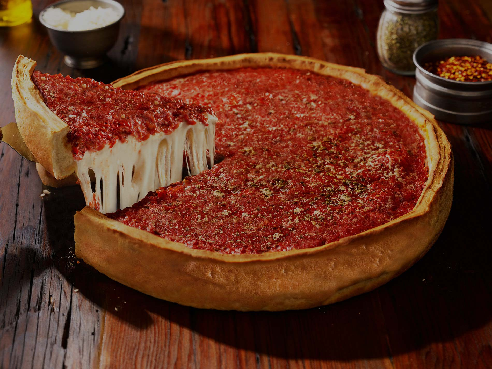

pizza dough

Description
This is a recipe for making pizza dough for chicago style pizza
Ingredients
- 3 cups AP flour
- 0.5 cups cornmeal
- 2 tbsp salt
- 1 tbsp sugar
- 2 tbsp yeast
- 1 cup water
- 0.5 cup butter
- Combine flour, cornmeal, salt, sugar, an yeast together in a bowl
- Use a stand mixer or your hands to mix the ingredients together into a dough
- Once the dough has come togehter, add the water and half the butter butter
- Mix until supple and not too hard
- Grease a bowl and allow the dough to rise for an hour, covered